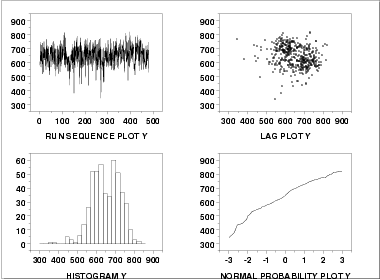

|
4-Plot
|
The next step is generate a
4-plot of the response variable.

This 4-plot shows:
- The run sequence plot
(upper left corner) shows that the location and scale are
relatively constant. It also shows a few outliers on the
low side. Most of the points are in the range 500 to 750.
However, there are about half a dozen points in the
300 to 450 range that may require special attention.
A run sequence plot is useful for designed experiments in that
it can reveal time effects. Time is normally a nuisance
factor. That is, the time order on which runs are made
should not have a significant effect on the response. If
a time effect does appear to exist, this means that there
is a potential bias in the experiment that needs to be
investigated and resolved.
- The lag plot (the
upper right corner) does not show any significant structure.
This is another tool for detecting any potential time effect.
- The histogram (the
lower left corner) shows the response appears to be reasonably
symmetric, but with a bimodal distribution.
- The normal probability
plot (the lower right corner) shows some curvature
indicating that distributions other than the normal
may provide a better fit.
|